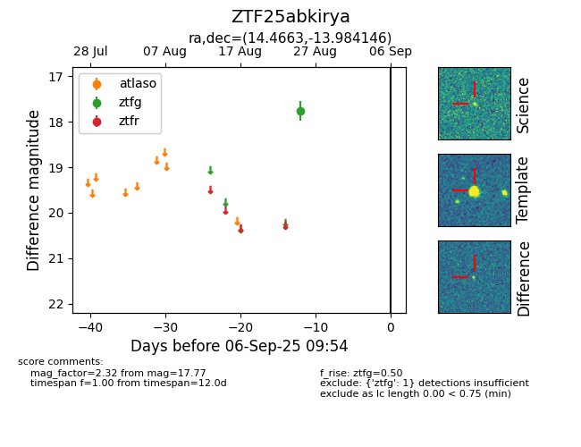

FINK: ZTF25abkirya
Lasair: ZTF25abkirya
ALeRCE: ZTF25abkirya
ZTF25abkirya (ztf,fink)
equatorial (ra, dec) = (14.4663,-13.98415)
galactic (l, b) = (129.7604,-76.77060)

last ztfg=17.77
1 ztfg detections